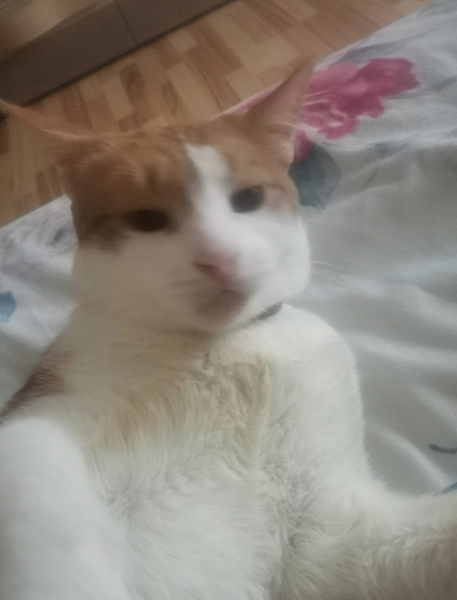
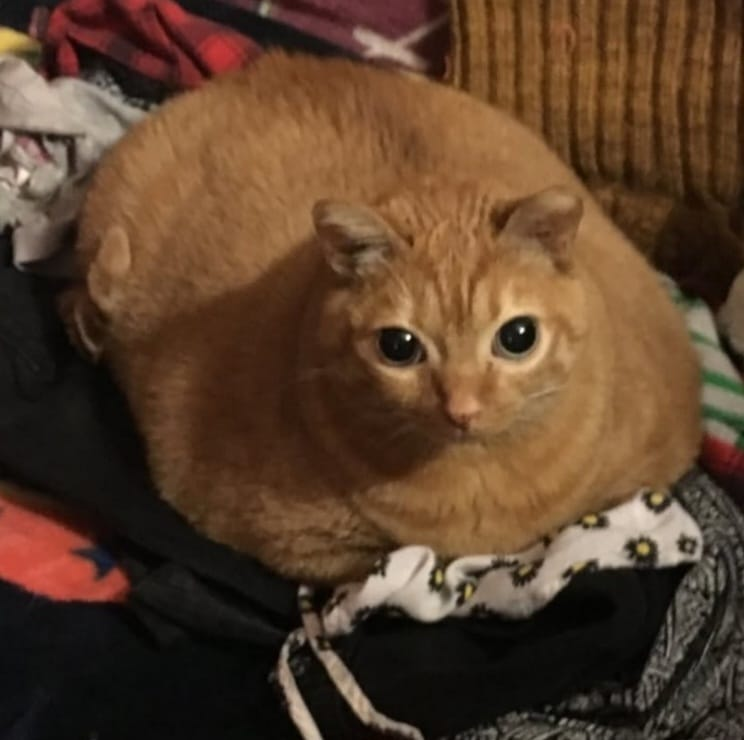
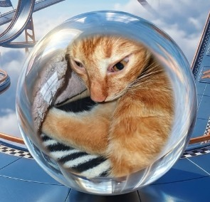
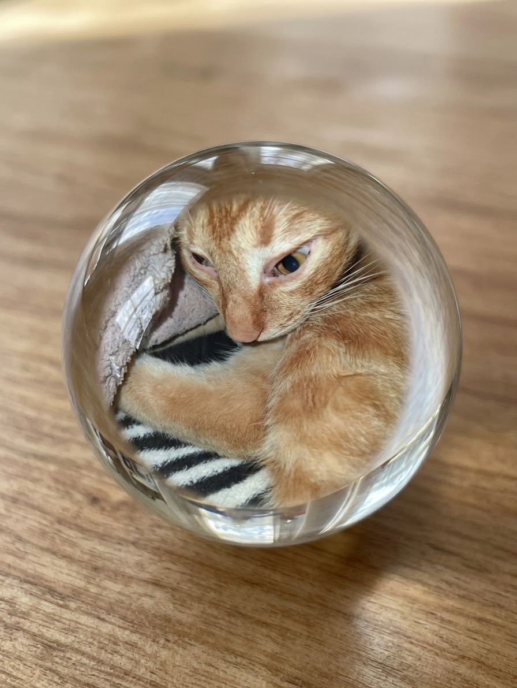
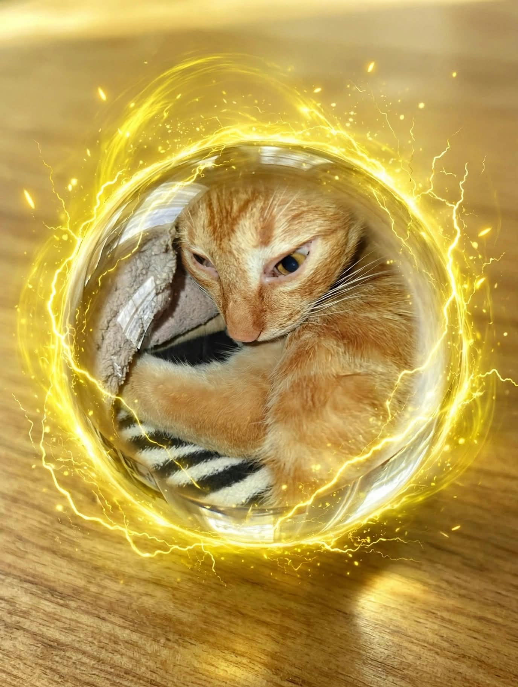
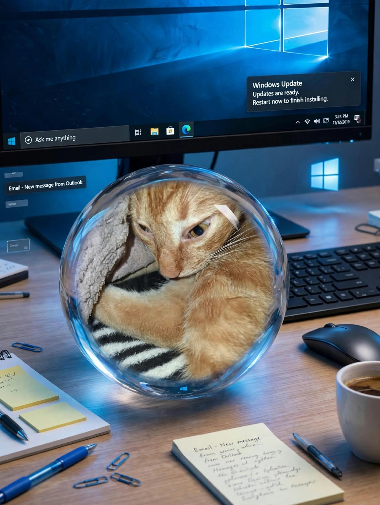

Tush is the iconic orange tabby meme created by a group of friends. Known for dropping ultra-specific botanical trivia out of nowhere, Tush became an instant legend thanks to the Character AI video creation tool.
📜 Official Meme Timeline
Started as an inside joke. In the original Character AI video, Tush stares intently at a fluffy pretzel and drops his first iconic line:
Remade with a brand-new photo using the same AI tool, Tush returned with an urgent PSA about exotic produce availability:
🐾 Meet Dush — Tush's Brother

Dush is Tush's orange-and-white brother who rose to meme fame on November 25, 2025. Approaching his 2nd birthday, he carries true street-cat energy.
- Meme Debut: Became a meme on November 25, 2025.
- Age: Turning 2 years old.
- Origin Story: Used to live on the streets before being rescued.
- Warning: Gets aggressive if you touch his leg.
- Fun Fact: Once went on an outdoor adventure on a leash.
🎸 Meet Crepus — Tush's Other Brother

Crepus is another legendary orange tabby in the Tush family, originally known on Instagram as Potato before being discovered in October 2025.
- Name Origin: Renamed "Crepus" from a reversed, shortened version of Supercalifragilisticexpialidocious.
- Social Media Rise: First gained fame as Potato on Instagram before crossing over to TikTok in October 2025.
- Iconic Meme: Starred in a Character AI video saying, "Hey did you know that Kurt Cobain died in the year of 1994? It's pretty sad that he died".
- Signature Soundtrack: His viral meme video features Nirvana's "Heart-Shaped Box" playing in the background.
🖼️ Gallery Of Tush



